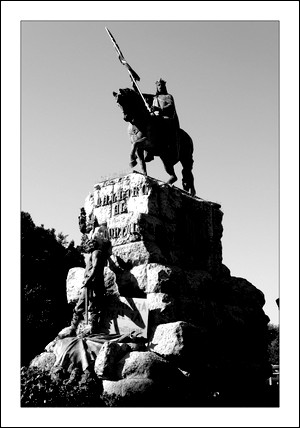

Estatua de Jaime I
Palma, entre realidad y ficción
La estatua de Jaime I, el Conquistador, se ubica en la Plaza de España. Dicha plaza fue construida entre 1902 y 1903 tras derruir la muralla renacentista y rellenar el antiguo foso de defensa y ha sufrido multitud de modificaciones a lo largo de los años.
La estatua del rey Jaime I, construida en 1927 e inaugurada en 1929, se encuentra en lo alto de un pedestal que no es más que un fragmento de la antigua muralla, concretamente del bastión de Sanoguera. También cabe destacar la estación metereológica modernista realizada por el arquitecto Gaspar Bennássar como el edificio del Bar Cristal, el cual se construyó entre 1913 y 1916 en el mismo lugar por donde avanzaba la muralla.